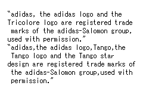

World Advance Soccer - Shouri e no Michi (Japan)
EEPROM 64K Save Format Spec gbakit Built-In 💾 MultiBoot 🎮 4P Link
Cartridge Identity
- Game Code
AASJ(FamilyAAS)- Header Title
W.A.SOCCER_W- Maker / Revision
9Q/ rev0- ROM Size
- 8.0 MiB (8,388,608 B)
- Save Media
EEPROM 64K- SHA-256
36ad536b794755155b57cc4a451284a60fa8cb331723c34a6aa6bcaa30362834
Screenshots

Link Cable & Multiplayer Communications
This title contains detected communication capabilities: 💾 MultiBoot 🎮 4P Link.
Detailed protocol specifications, SIO registers, Joybus commands, and MultiBoot sequences are documented in the Link & Multiplayer Reference.
- Multi-Player SIO (4P)
- 16-bit ring network · SIOCNT (
0x04000128) literals:0x09ca98,0x09cad8,0x09ccec· SIODATA32/SIOMULTI0 (0x04000120) literals:0x09cddc - Single-Cart MultiBoot
- Single-Cartridge MultiBoot (Download Play) client/server handler · Thumb SWI 0x25 (
0xDF25):0x694824,0x6a91a6,0x6a9aea
Battery Save Format Specification
Open Full Save Format SpecDownload save-format.json
- Specification Coverage
- 4 mapped fields · 0 verified checksum(s) · Confidence: HIGH
- gbakit Built-In Support
- Built-in (AASJ)
gbakit save verify AASJ save.sav
gbakit save decode AASJ save.sav
gbakit save fix AASJ damaged.sav -o repaired.savObserved Battery Save Layout
- Fill Byte & Active Size
0x00fill · 16–16 / 8,192 B active (entropy 3.33 bits/B)- Active Offset Ranges
0x0–0xF(1 total)- ASCII Magic / Headers
AA-P-BGA- Observed Variable Regions
- 0 bytes across 0 spans: None
- Candidate Checksum/Counter Spans
- None
Text, Fonts & Scene Data
- Primary Text Encoding
- 16-bit / UTF-16LE text (
6ASCII strings) - Font & VWF Indicators
- VWF Width Table 1bpp Font · BIOS SWIs: BitUnPack
0x10:0· LZ770x11/12:0· Huffman0x13:0· RLE0x14/15:0 - Scene & Packaging
26ROM pointer tables (≥32 entries,7≥200) ·0relativeu32TOCs ·207OAM metasprite hits
Hardware MMIO Subsystems
ppu_display0x808e920